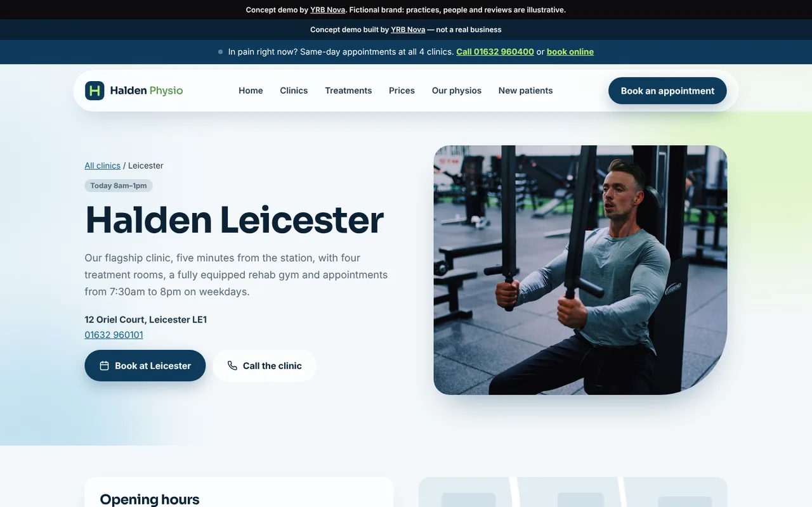
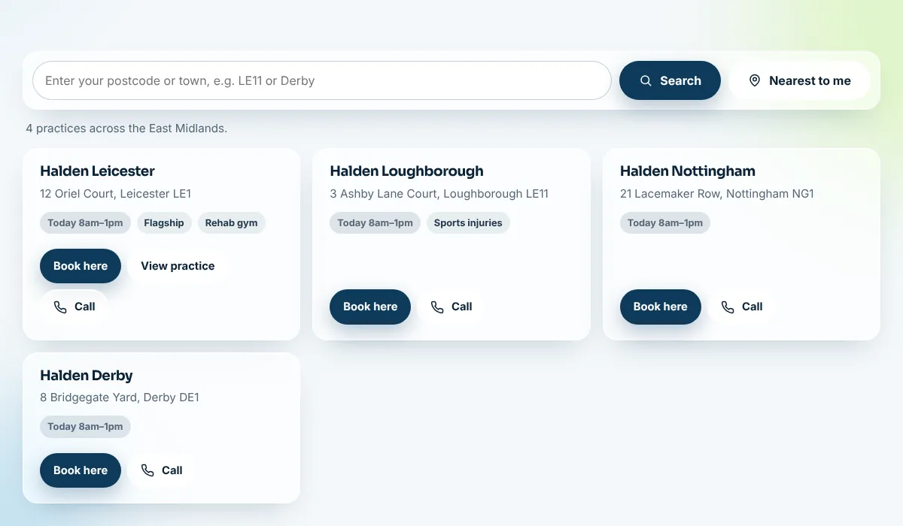
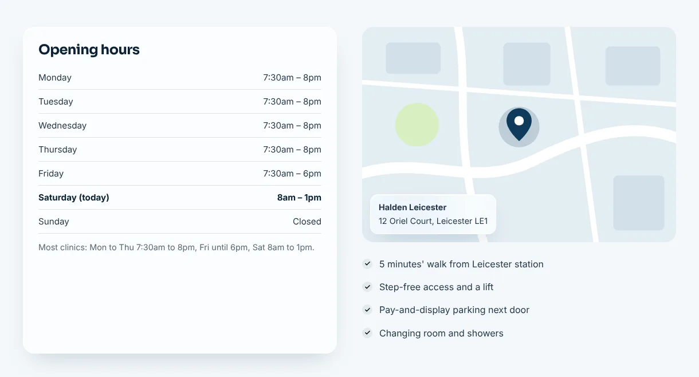
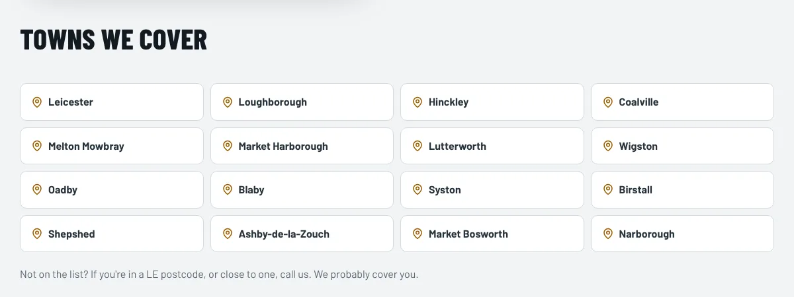

Local SEO for Leicester Businesses: The Basics That Work

Someone in Oadby has water coming through the bedroom ceiling. They grab their phone and type "roofer Leicester". You're a roofer, you're ten minutes away, and you're nowhere on the page.
The roofer who gets the call isn't always the best one. Quite often they're just the one whose website and Google listing told Google, very clearly, "we're a roofer, and we work here".
That's local SEO. It sounds like a dark art, but most of it is boring, fixable stuff you can sort in an afternoon.
Google tells you what it looks at
You don't have to guess. Google's own help page on improving your local ranking says local results are based mainly on three things: relevance, distance and prominence.
In plain English:
- Relevance means you do the thing they searched for. Your profile and site need to say "emergency roof repairs", not just "roofing solutions".
- Distance is how far you are from the searcher or the place they typed. You can't move your van to Narborough Road for the afternoon, so this one's mostly out of your hands.
- Prominence is how well known you are. Google says this includes reviews and information from around the web, such as links and articles that mention you.
Your website feeds into all three. Your Google Business Profile does a lot of the heavy lifting too, and if you haven't set that up yet, start with our guide on getting your business on Google Maps.
Say "Leicester" where a person would expect to read it
Plenty of local sites never say where they are. The homepage says "Quality plumbing you can trust" and the only clue to location is a phone number with an 0116 at the front.
Google reads words, so give it some. Put your trade and your area in the places that matter:
- The page title (the blue link in Google): "Plumber in Leicester | Same-Week Boiler Repairs | Your Name".
- The main heading on the page: "Plumber in Leicester and Wigston" beats "Welcome".
- The first paragraph: one plain sentence on what you do and where.
- The footer: your business name, area and phone number on every page.
Write it for a human first. "Leicester plumber Leicester plumbing Leicester" in white text at the bottom of the page is a 2009 trick, and it reads like a ransom note.
Use the same name, address and number everywhere
Your business name, address and phone number should match everywhere they appear: your website, your Google profile, Facebook, Checkatrade, the lot. If your site says "Unit 4" and Google says "Unit 4B", or you've got an old mobile number floating about on an old directory, that's the sort of mess worth tidying up.
Pick one version and copy it exactly. Same spelling, same phone number, same "Ltd" or no "Ltd". Then go and hunt down the old listings with last year's number on them. Yes, all of them. Put the kettle on first.
One real location, one proper page
If customers come to you, each place they can visit deserves its own page. Not a line in a list, a page.
Our Halden Physio concept site (a demo, not a real clinic) is built around four clinics in the East Midlands. The clinics page lets people search by postcode or town and see every location with its address.

Click through to Leicester and you get a page that's only about Leicester: the address, a direct phone number, opening hours, the physios who work there and the treatments on offer at that clinic. There's a "Book at Leicester" button too, so the page does a job for the customer as well as for Google.
Add the details only a local would know
This is where local pages earn their keep, and where most copy-and-paste pages fall flat. Tell people how to actually get to you.

Five minutes from the station, parking next door, step-free access. None of that is clever, but it's specific, it's useful and it's obviously about one real place. (The map is a simple drawing rather than an embedded Google Map, so it doesn't load extra cookies before anyone has agreed to them. More on that in our privacy and cookie banner guide.)
On a real site, answer what customers ask you on the phone: which car park, is there a step, can I park on the drive.
If you go to the customer, list the towns honestly
Mobile trades, cleaners and valeters don't have a shop, and that's fine. A clear "areas we cover" page tells Google and customers where you'll actually turn up.

What you shouldn't do is make 40 near-identical pages that swap the town name and nothing else ("Roofer in Blaby", "Roofer in Syston", same text, different word). Google's spam policies call this sort of thing doorway abuse, and customers can smell it too.
A separate page for a town is worth it when you've got something real to say: jobs you've done there, photos, a review from a customer in that town, how quickly you can usually get out. If all you've got is the name, it belongs on the list.
Get other Leicester websites to mention you
Prominence partly comes from the rest of the web talking about you. For a small business this doesn't mean buying links (please don't). It means collecting the mentions you've already earned in real life:
- The trade body or scheme you belong to, if it lists members.
- Suppliers or businesses you work alongside who'd happily link to you.
- The junior football team or charity event you sponsor.
- Local news, if you've done something worth a story.
- Proper local directories that real people use, filled in with the exact same details as everywhere else.
None of these will make you a Google celebrity overnight, but together they show you're a real, active Leicestershire business.
Let your reviews do some of the talking
Reviews are part of prominence, according to Google. When customers mention the town and the job ("fixed our flat roof in Hinckley the day after we called"), that's useful to the next reader as well.
You can't write the reviews for them, and you shouldn't. You can ask nicely and make it easy, then show the real ones on your site. Our guide on showing reviews on your website honestly covers the how, and the UK rules on fake reviews.
Do this today: the Leicester local SEO checklist
- Google yourself on your phone: "[your trade] Leicester" and "[your trade] near me". Note who shows up and where you are.
- Check your homepage title and main heading both say what you do and where.
- Write down your official name, address and number, then check your website footer, Google profile and Facebook all match it exactly.
- Add an "areas we cover" list with the real towns you work in.
- Write three useful local details on your contact or location page: parking, landmarks, how far you'll travel.
- Ask your last five happy customers for a Google review, and mention it's handy if they say what job you did.
- List two or three places that could genuinely link to you, and ask them.
Where we come in
Every site we build includes on-page SEO from day one: proper titles, headings, fast loading and a layout that works on phones. Our packages are fixed prices: £350, £600 or £800, paid once, with optional hosting and support from £10 a month.
We're based in Leicestershire, so we know the difference between Wigston and Oadby (and we won't tell either of them you mixed them up). See our page on web design in Leicester, or grab a free website audit and we'll tell you what's holding your site back.
FAQ
How long does local SEO take to work?
There's no fixed timeline, and anyone promising first place by next week is guessing. Fixes like matching your details and improving page titles can be done in a day, but Google takes time to notice changes and results build up over weeks and months.
Do I need a separate page for every town I cover?
No. A single "areas we cover" page is fine for most small businesses. Only add a page for a town when you've got something genuinely useful and different to say about it, such as local jobs, photos or reviews.
Can I rank in Leicester if I work from home?
Yes. Many trades work from home and serve customers at their addresses. Set your Google Business Profile up as a service-area business with your address hidden, and say clearly on your website which towns you cover.
Does my website affect my Google Maps ranking?
It can. Google says relevance and prominence both count, and your website helps with both by explaining what you do and where.
Want to know why you're not showing up in Leicester?
Send us your web address and we'll check it the way Google and a local customer would, then tell you plainly what to fix first. The audit is free.